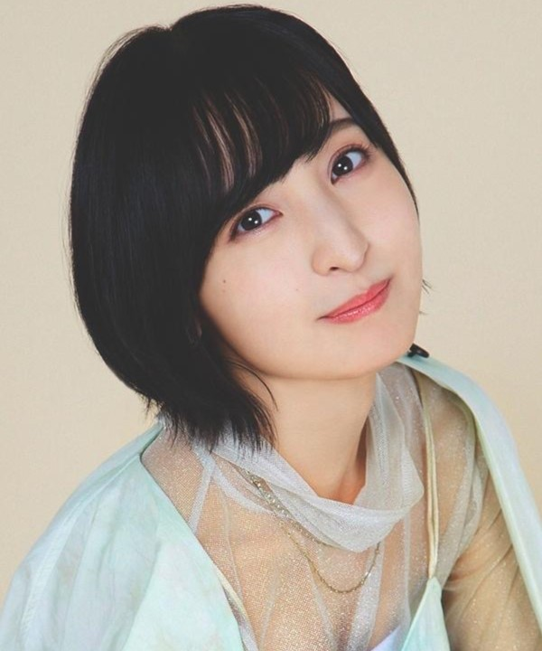

常守 茜
CV: 花澤 香菜
公安局刑事課一係に所属する監視官。 数々の事件の捜査にあたる中で刑事として大きく成長。 シビュラシステムの正体を知るも、人間性と法秩序を 尊重する確固たる信念で捜査にあたる。

宜野座 伸元
CV: 野島 健児
公安局刑事課一係に所属する執行官。 槙島事件で犯罪係数が悪化し、執行官に降格した元監視官。 朱のよき理解者で、一係のまとめ役であろうと努める。

霜月 美佳
CV: 佐倉 綾音
公安局刑事課一係に所属する史上最年少の監視官。 槙島事件で友人を失った過去を持ち、 「犯罪係数の高い人間は速やかに排除すべき」 という志向を持つ。 相反する考えを持つ朱に反感を抱いている。

狡噛 慎也
CV: 関 智一
元・厚生省公安局刑事課一係の執行官。 海外へ逃亡し、傭兵として放浪生活を送っているようだ。 高い戦闘技術と強靭な肉体を誇り、 元刑事らしい知性と正義感も持ち合わせる。

ニコラス・
ウォン
CV: 神谷 浩史
SEAUn（東南アジア連合／シーアン）憲兵隊大佐。 シビュラシステムをSEAUnに導入したハン議長の下で、 街の秩序を守る。冷静沈着な性格で任務を遂行する。
デズモンド・
ルタガンダ
CV: 石塚 運昇
遠洋の群島を支配する傭兵団のリーダー。 射撃、格闘すべての分野において高い能力を誇りながら、 インテリで紙の本を好む。